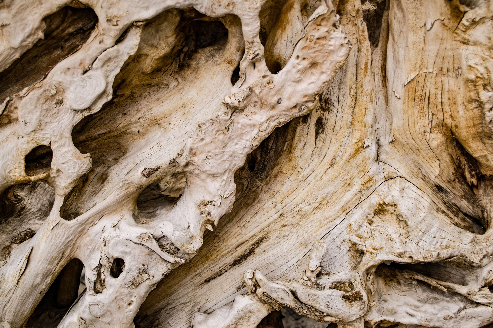
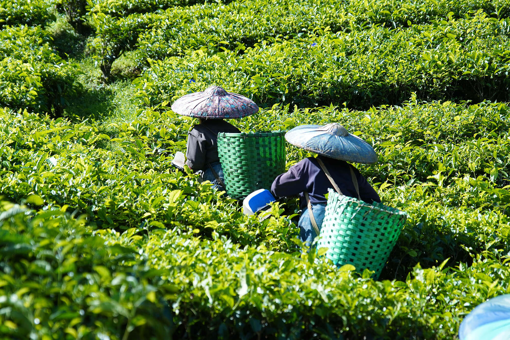
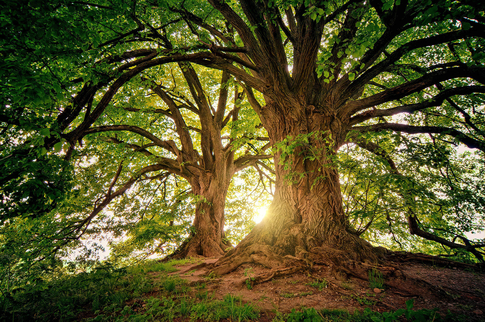
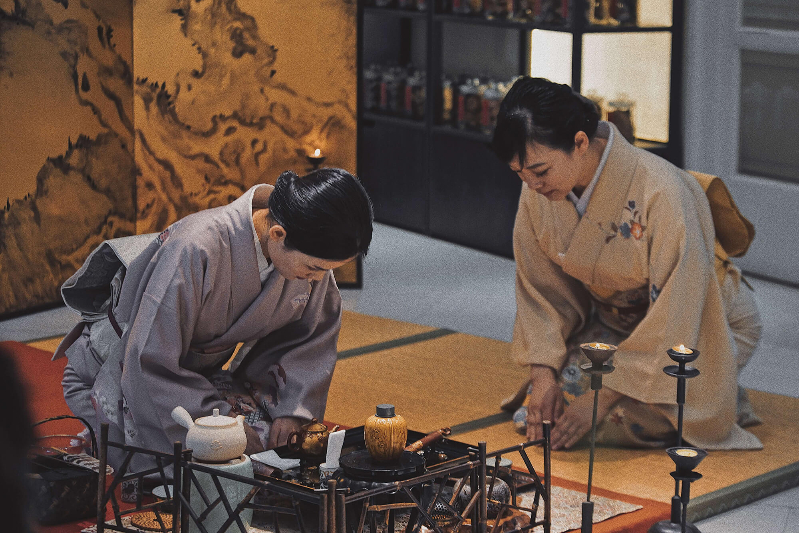
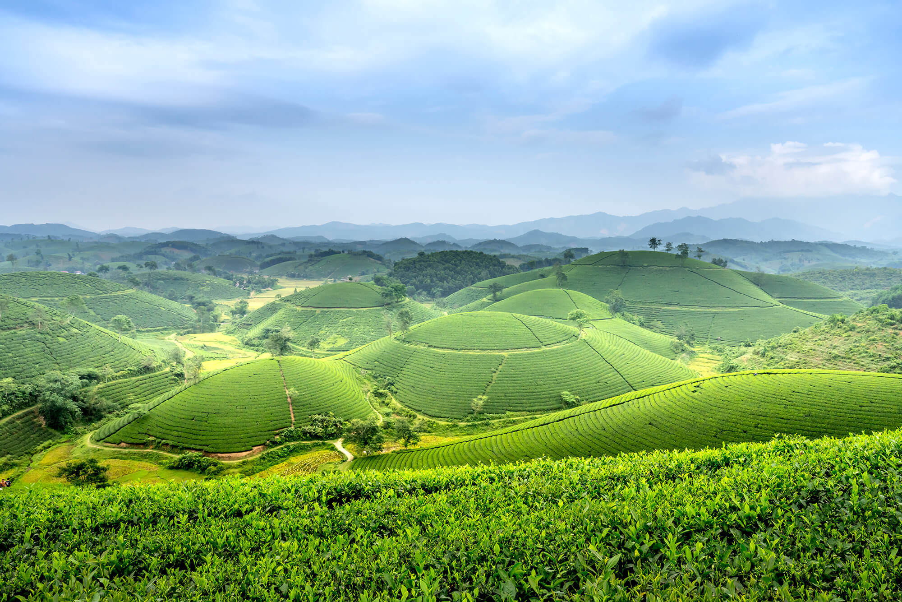

Tất cả những gì bạn cần biết về Trà Bancha
Trà Bancha là một loại trà dưỡng sinh được làm từ những chiếc lá lâu năm của cây chè và do đó chúng có giá trị về mặt sức khỏe hơn rất nhiều so với các loại trà khác.
Trà Bancha có hàm lượng caffein thấp hơn nhiều so với trà thường và sở hữu hương vị độc đáo, riêng biệt. Trong bài viết này, chúng ta sẽ tìm hiểu trà Bancha là gì, hương vị của loại trà này như thế nào và cách pha trà Bancha.
I. Giới thiệu về Trà Bancha
Công dụng: Trà Bancha mang lại vô số lợi ích cho cơ thể, chẳng hạn như thúc đẩy tiêu hóa và giải độc các chất có hại như rượu, thức ăn, độc tố và hóa chất. Hỗ trợ lọc máu, giảm mệt mỏi và căng thẳng đồng thời kích thích tiêu hóa và thúc đẩy tính kiềm.
Ngoài ra, tính chất khử trùng của nó làm cho nó trở thành một giải pháp có giá trị để làm sạch vết thương, làm sạch da mặt và điều trị mụn trứng cá. Trà Bancha thậm chí có thể dùng như một loại nước súc miệng và dung dịch vệ sinh phụ nữ hiệu quả.
1. Trà Bancha là gì?
Lá cây trà Bancha được thu hái vào cuối mùa thu, khi những chiếc lá đã lớn và có màu xanh đậm. Điều này làm cho trà Bancha có hàm lượng tannin (hợp chất tự nhiên trong trà) thấp hơn so với các loại trà khác. Điều này cũng tạo ra hương vị êm dịu, nhẹ nhàng và ít đắng.
Quá trình chế biến phức tạp của trà Bancha bao gồm một loạt các kỹ thuật, bao gồm nấu, cuộn và sấy khô, hoạt động hài hòa để nắm bắt được bản chất vốn có của lá cây trà lâu năm. Quá trình tỉ mỉ này bảo tồn các thuộc tính đặc biệt của trà đồng thời tăng cường hương vị tự nhiên của nó.
Trà Bancha là một loại trà truyền thống đặc biệt của Nhật Bản, được làm từ lá cây trà thu hoạch sau vụ mùa chính vào cuối mùa thu. Từ Bancha trong tiếng Nhật bao gồm hai ký tự kanji “ban” 番 và cha “茶”. Ký tự “cha” có nghĩa là trà, còn ký tự “ban” ám chỉ về “thứ tự phía sau”. Như vậy “Bancha” có nghĩa là “trà hái sau”.
Đúng như tên gọi, trà Bancha được thu hoạch muộn hơn trong năm, sau shincha và Sencha. Đây sẽ là một cách hay để phân biệt Sencha với Bancha vì Bancha được làm từ vụ thu hoạch thứ hai, thứ ba hoặc thậm chí thứ tư và nó được làm bằng những lá già hơn của cây chè.
Định nghĩa thứ hai của trà Bancha cho bạn biết về một khía cạnh khác của trà. “Ban” cũng có thể có nghĩa là “hàng ngày”, điều này cũng có ý nghĩa khi nói đến Bancha vì trà Bancha là một loại trà rẻ hơn nhiều (nhưng lại có giá trị sức khỏe tốt hơn) so với Sencha, vì vậy nó có ý nghĩa để uống hàng ngày.
2. Trà Bancha có hương vị như thế nào?
Hương vị của trà Bancha rất đa dạng và phong phú. Đôi khi có một chút vị hạnh nhân hoặc vị ngọt nhẹ của trái cây. Trà Bancha có hàm lượng caffeine rất thấp so với các loại trà khác, điều này khiến nó trở thành một lựa chọn tốt cho những người muốn thưởng thức trà mà không muốn cảm thấy quá kích thích (dẫn tới say trà, mất ngủ).
Hương vị bắt đầu với mùi vỏ cây hoặc hương gỗ dễ chịu trong 1-3 lần ngâm đầu tiên và sau đó lắng xuống thành một loại trà ngọt dịu trong 4-6 lần ngâm.
II. Phương pháp dưỡng sinh Oshawa kết hợp với trà bancha
Theo phương pháp dưỡng sinh Oshawa, lá Trà bancha (từ 3 năm trở lên) rất đặc biệt và lợi ích sức khỏe vượt trội hơn so với các loại trà khác. Thời gian sinh trưởng dài của nó dẫn đến hàm lượng caffein thấp hơn, nhưng nó bù lại bằng nồng độ khoáng chất cao hơn và hàm lượng tanin thấp.
Hương vị nhẹ nhàng và hàm lượng caffein thấp của Trà Bancha mang đến cơ hội thưởng thức loại trà này mà không lo bị mất ngủ, không giống như các loại trà khác có thể để lại dư vị đắng hoặc chát.
Đối với những người thưởng thức hương vị trà nhưng còn ngần ngại vì lo ngại mất ngủ, hoặc những người không quen uống các loại đồ uống có tính kích thích, đặc biệt là phụ nữ và trẻ em, thì Trà bancha lâu năm là một sự lựa chọn tuyệt vời.
Loại trà tinh tế này không chỉ dễ chế biến và tiêu thụ, mà chi phí hợp lý khiến nó trở thành sự lựa chọn hoàn hảo cho mọi người ở mọi lứa tuổi và thích hợp vào bất kỳ thời điểm nào trong ngày.
III. Cách pha trà bancha kết hợp chữa bệnh
Sự kết hợp giữa trà Bancha lâu năm với các thực phẩm bổ dưỡng khác như nước tương Tamari, mơ muối và bột sắn dây tạo nên những bài thuốc hữu hiệu hỗ trợ phòng ngừa và điều trị nhiều loại bệnh.
1. Cách pha trà Bancha và tương Tamari
Bài thuốc này rất có lợi cho các bệnh do âm như thiếu máu, mệt mỏi, bồi bổ tim đập nhanh, giảm đau, khát nước, nôn mửa, chống chóng mặt, ngất xỉu, hỗ trợ điều trị rối loạn đường ruột, bổ thận, chống mệt mỏi, suy nhược thần kinh.
Cách làm: Rót trà bancha đã sôi (80-85 độ C) vào cốc. Thêm 1 thìa nước tương tamari và khuấy đều để trà và tương hòa quyện với nhau.
2. Cách pha trà Bancha Gạo Lứt
Phương thuốc này rất lý tưởng để điều trị các bệnh khác nhau, bao gồm chán ăn, đặc biệt đối với những người bị suy nhược trong một thời gian dài. Tuy nhiên, những người bị lở miệng, khô cổ, khô phân, khô khớp thì tạm thời không nên ăn gạo lứt rang.
Cách làm: Đun sôi nước và tiến hành ủ trà bancha và gạo lứt rang trong 1 phút (80-85 độ C). Ngoài ra bạn có thể nấu nước gạo lứt rang và thêm vào trà bancha như cách trên (ủ khoảng 20 giây) để sử dụng nhanh hơn.
3. Cách pha trà Bancha và bột sắn dây
Sự pha trộn cảu trà Bancha và bột sắn dây hỗ trợ củng cố hệ thống đường ruột, đặc biệt có lợi trong trường hợp tiêu chảy và viêm ruột thừa. Hơn nữa, đặc tính chữa bệnh của nó mở rộng đến các bệnh như viêm thanh quản và các cơ quan khác trong hệ hô hấp.
Cách làm:
- Để tạo ra một hỗn hợp mịn và tinh chế, hãy lấy một chiếc cốc và cho một thìa cà phê tinh bột sắn vào trong. Sau đó, thêm hai thìa nước lạnh vào cốc và khuấy đều cho đến khi tạo thành hỗn hợp sệt.
- Chuẩn bị một tách trà bancha tinh tế và hấp dẫn bằng cách pha hoặc nấu một cách khéo léo với nước sôi mới. Tăng hương vị cho trà bancha của bạn bằng cách nhẹ nhàng rắc một chút muối vào nước sôi. Cách này nhằm tăng hương vị và trải nghiệm khi uống trà. Trộn nhẹ nhàng trà bancha với bột sắn dây cho đến khi hỗn hợp trong ánh và họa quyện vào nhau.
4. Cách pha trà Bancha + tương tamary + mơ muối lâu năm + nước cốt gừng
làm kích thích tiêu hoá, giúp tiêu thực , giải độc rượu bia , thực phẩm , chống ung thư, giảm m ệt nhọc, giúp lưu thông máu huyết, làm mạnh mạch tim.
Cách làm
- Băm gừng và lấy nước. Bỏ gừng và mơ muối vào một cốc sẵn có.
- Đun sôi nước trà bancha cho đến khi sôi sùng sục, sau đó rót vào cốc và khuấy nhẹ nhàng.
- Khi món trà đã chín, thêm một ít nước tương tamary vào. Uống nóng và tránh gió.
5. Cách pha trà Bancha + tương tamary + mơ muối lâu năm + nước cốt gừng + Bột sắn dây
(Còn gọi là trà Bình Minh) uống vào buổi sáng để tẩy độc và thanh lọc cơ thể tốt cho mọi loại bệnh
Cách làm
- Xay nhuyễn bột sắn dây để sử dụng sau cho công thức này. Nếu không nhuyễn, sắn dây sẽ khó chín và dễ tạo cục. Đối với sắn dây chất lượng tốt, nó sẽ tan nhanh và có độ mịn tốt. Bạn cũng có thể hòa trước bột sắn dây với một thìa nhỏ nước ấm để dễ tan chảy.
- Băm gừng và lấy nước. Thêm hỗn hợp bột sắn dây, gừng và mơ muối vào một cốc sẵn có.
- Đun sôi nước trà bancha cho đến khi sôi sùng sục, sau đó rót vào cốc và khuấy nhẹ nhàng.
- Khi món trà đã chín, thêm một ít nước tương vào. Uống nóng và tránh gió.
IV. Lợi ích của trà dưỡng sinh Bancha
Hãy cùng thảo luận về những lợi ích sức khỏe của trà Bancha và lý do tại sao bạn nên thêm nó vào thói quen hàng ngày của mình!
1. Tính kiềm hóa trong trà Bancha
Tính Kiềm hóa trong trà Bancha mang lại nhiều lợi ích sức khỏe và được sử dụng trong nhiều ứng dụng trị liệu.
Với đặc tính kiềm hóa, trà Bancha đóng một vai trò quan trọng trong việc điều hòa nồng độ pH trong cơ thể, tăng cường sức khỏe tối ưu và ngăn ngừa sự xuất hiện của bệnh tật.
Chứa nhiều khoáng chất kiềm như canxi, magiê và kali, trà Bancha tạo điều kiện thuận lợi cho việc tạo ra một môi trường kiềm, do đó ngăn ngừa sự tích tụ axit và ổn định các chức năng trao đổi chất trong cơ thể. Hiệu quả của trà Bancha như một phương thuốc trị liệu đã được ghi nhận rõ ràng trong nhiều nghiên cứu khoa học.
Đặc tính kiềm độc đáo của trà Bancha làm giảm các triệu chứng liên quan đến loét dạ dày và các tình trạng liên quan. Bằng cách giảm đau và viêm, trà Bancha thúc đẩy quá trình tái tạo niêm mạc dạ dày bằng cách tạo ra môi trường kiềm. Hơn nữa, việc tiêu thụ trà Bancha có khả năng hỗ trợ giảm cân. Bản chất kiềm của trà hỗ trợ điều chỉnh lượng đường trong máu, ức chế sự tích tụ của mô mỡ và kích thích quá trình trao đổi chất. Do đó, điều này có thể tạo điều kiện thuận lợi cho khả năng đốt cháy chất béo của cơ thể và cuối cùng là thúc đẩy quá trình giảm cân.
2. Ít caffein
Một trong những lợi ích tuyệt vời là trà Bancha không gây mất ngủ, đây là loại trà có hàm lượng caffein thấp nhất. Điều này làm cho nó phù hợp với những người trẻ tuổi, những người nhạy cảm với caffein hoặc những người bị mất ngủ. Mặc dù caffeine có thể tốt ở mức độ vừa phải, nhưng chắc chắn sẽ có những tác dụng phụ tiêu cực nếu bạn dùng quá nhiều.
Cho dù bạn nhạy cảm với caffein hay bạn chỉ đang cố gắng cắt giảm, thì Bancha có thể là một cách tuyệt vời để xây dựng một thói quen lành mạnh hơn. Bạn cũng có thể bắt đầu buổi sáng bằng một loại trà có hàm lượng caffein cao hơn như Sencha hoặc gyokuro và sau đó dùng trà Bancha cho buổi chiều hoặc buổi tối.
Tại sao Bancha ít caffeine?
Lý do Bancha có ít caffein là vì nó được làm từ những lá trà già hơn. Cây trà sản xuất caffeine như một cơ chế phòng thủ để bảo vệ bản thân khỏi côn trùng. Những lá non, mềm hơn của cây trà dễ bị côn trùng tấn công hơn, vì vậy chúng cần sản xuất nhiều caffeine hơn để tự vệ. Đây là lý do tại sao các loại trà làm từ lá trà non như gyokuro, matcha và Sencha có hàm lượng caffein tương đối cao.

3. Hàm lượng khoáng chất cao
So với các loại trà xanh khác, trà Bancha chứa một lượng lớn canxi, florua và magiê. Có thể là một ý tưởng hay khi uống trà Bancha kết hợp với chế độ ăn uống lành mạnh, để đảm bảo rằng bạn đang nhận được lượng khoáng chất hàng ngày. Có thể có nhiều nhược điểm khi không nhận đủ khoáng chất và mặc dù nó không thể thay thế cho một chế độ ăn uống lành mạnh, nhưng Bancha có thể là một cách tuyệt vời để bổ sung.
florua
Lá già của cây trà thực sự chứa hàm lượng florua cao hơn, đây là một trong những lợi ích tuyệt vời khác của trà Bancha. Lý do nồng độ này cao hơn là do florua tồn tại trong nước, không khí và đất và chúng tích tụ trong thực vật theo thời gian. Kết quả là, lá già chứa hàm lượng các khoáng chất này cao hơn so với lá non.
Florua có thể giúp cải thiện sức khỏe răng miệng. Florua có thể củng cố men răng và chống sâu răng do axit và vi khuẩn gây ra. Đây là lý do tại sao bạn thấy rất nhiều sản phẩm nha khoa có chứa florua. Tất nhiên, một cách tự nhiên hơn để có được khoáng chất này là pha một ít lá Bancha trong nước nóng và uống một tách trà thơm ngon!
chất chống oxy hóa
Giống như các loại trà xanh khác, Bancha rất giàu chất chống oxy hóa. Những chất chống oxy hóa này giúp bảo vệ các tế bào chống lại tác hại của các gốc tự do, có thể mang lại những tác dụng có lợi cho sức khỏe của bạn. Lợi ích nổi tiếng nhất của chất chống oxy hóa là bảo vệ khỏi lão hóa, nhưng chúng cũng có thể dẫn đến một hệ thống miễn dịch mạnh mẽ hơn, giúp bạn tránh được tác động của bệnh tật trong tương lai.
catechin
Catechin là một loại phenol và chúng được sản xuất như một chất chuyển hóa thứ cấp. Chất chuyển hóa thứ cấp là một hợp chất được sản xuất bởi thực vật không có tác động trực tiếp đến sự phát triển của nó, mà thay vào đó, nó phục vụ chức năng thứ cấp như bảo vệ.
Trong trường hợp này, catechins được sản xuất để bảo vệ trà khỏi tia UV khi nó tiếp xúc với ánh sáng mặt trời. Các loại trà bóng như gyokuro và kabusecha sẽ có ít catechin hơn, trong khi các loại trà không bóng như Bancha sẽ có nhiều hơn. Catechin đã được biết đến với tác dụng chống ung thư và tái tạo tế bào và chúng cũng có thể tốt cho những thứ bình thường như cảm lạnh thông thường.
4. Sự trao đổi chất
Người ta đã chứng minh rằng trà xanh có thể giúp tăng cường trao đổi chất và điều này phải được đưa vào một trong nhiều lợi ích của trà Bancha. Trong một nghiên cứu, mọi người được chia ngẫu nhiên thành 2 nhóm khác nhau và được yêu cầu thực hiện 30 phút tập thể dục vừa phải. Một nhóm uống một tách trà xanh trước khi tập thể dục và nhóm còn lại uống giả dược. Nghiên cứu cho thấy rằng tiêu thụ trà xanh có thể làm tăng quá trình oxy hóa chất béo trong khi tập thể dục vừa phải và nghỉ ngơi.
5. Cải thiện huyết áp
Theo một nghiên cứu của Cambridge, việc uống trà xanh và trà đen trong thời gian dài (3 tháng trở lên) có tác động tích cực đến cả huyết áp tâm thu và tâm trương. Trà xanh thậm chí còn được phát hiện là có tác dụng mạnh hơn so với trà đen.
Ngoài ra, trà xanh còn có l-theanine có thể giúp tạo ra hiệu ứng bình tĩnh và thư giãn hơn cho não. Điều này kết hợp với hàm lượng caffein thấp trong trà Bancha làm cho nó trở nên tuyệt vời để giảm chứng mất ngủ và cải thiện vệ sinh giấc ngủ. Giấc ngủ ngon hơn không chỉ có lợi cho sức khỏe tim mạch mà còn cả sức khỏe tinh thần. Chúng tôi chắc chắn có thể nói rằng Bancha là một trong những loại trà lá rời tốt nhất cho giấc ngủ.
6. Trà Bancha lợi tiêu hóa
Vì trà Bancha có nhiều khoáng chất nên nó cũng có thể tốt cho tiêu hóa. Người Nhật thường uống một tách trà Bancha sau bữa ăn. Điều này là vì một số lý do khác nhau. Trà có hương vị dễ chịu, nhẹ, hàm lượng caffein thấp và nó có thể là một thức uống tuyệt vời.
V. Sự khác biệt giữa Trà Sencha và Bancha là gì?
Lá chè Sencha và Bancha đến từ cùng một cây chè mọc trong một trang trại chè. Trừ khi bạn đã quen thuộc với cách hai loại trà xanh này được trồng, thu hoạch và chế biến, nếu không bạn sẽ rất bối rối khi cố gắng tìm hiểu xem điều này có thể xảy ra như thế nào. Làm thế nào để hai loại trà khác nhau đến từ cùng một cây chè.
Mỗi vụ thu hoạch được tiến hành với sự cẩn thận và chính xác tối đa. Trước khi thu hoạch Sencha, cây chè được che phủ trong bóng râm trong vài tuần, điều này dẫn đến sự chuyển đổi chất diệp lục trong lá, khiến chúng có vị ngọt tuyệt vời.
Vụ thu hoạch sớm và giữa mùa hè được lên kế hoạch cho Sencha. Người hái trà chỉ hái những lá trà phía trên của mỗi cây trà, để lại những lá trà phía dưới còn nguyên vẹn để quay lại sau và thu hoạch cho Bancha.
Trà Sencha:
- Việc che nắng cho cây được thực hiện vài tuần trước khi thu hoạch.
- Thu hoạch: đầu và cuối mùa xuân, đầu mùa hè
- Các bộ phận của cây được thu hoạch: lá chè non mềm ở phần trên của cây chè
- Hương vị: ngọt, cỏ, đất, rong biển
- Caffein: cao nhất
- Phenol: cao nhất
Trà Bancha
- Không che bóng trước khi thu hoạch.
- Thu hoạch: cuối hè/đầu thu
- Bộ phận cây được thu hoạch: phần dưới của cây chè (thân, lá trưởng thành)
- Hương vị: bỏng ngô, hạt dẻ
- Cafein: thấp nhất
- Phenol: thấp nhất
VI. Trà Bancha Shan Tuyết - Sự hài hòa của 2 nền văn hóa trà Nhật Bản và Việt Nam
Trà Bancha Shan Tuyết, một thành viên của tộc trà Bancha, là sự pha trộn độc đáo của những lá trà tuyết (shan tuyết). Được đánh giá cao về hương vị tinh tế và hương thơm tinh tế, loại trà này được coi là một loại trà cao cấp.
"Trà Bancha Shan Tuyết" mang đến sự hòa quyện tuyệt vời của truyền thống trà Nhật Bản với hương vị đặc trưng của trà Shan Tuyết từ Việt Nam. Sản phẩm này kết hợp những đặc điểm độc đáo từ cả hai loại trà, mang đến trải nghiệm thưởng trà độc đáo và tinh tế.
Đặc biệt, tại vùng Hoàng Su Phì, Hà Giang sở hữu những cây chè Shan Tuyết cổ thụ với số lượng lá già (3-10 năm) hảo hạng. Những chiếc lá Trà Bancha Shan Tuyết lâu năm này cực xanh tươi, gần như chưa bao giờ rụng lá trừ phi bị sâu ăn hoặc chật cành.
Công dụng tuyệt vời của trà Bancha shan tuyết như sau:
- Chứa nhiều dinh dưỡng trong tất cả các loại trà;
- Tăng cường sức đề kháng, tinh thần và giúp bạn ngủ ngon;
- Cải thiện hoàn toàn hệ tiêu hóa, kiềm hóa axit và đánh tan mỡ máu;
- Cải thiện tuần hoàn não, giúp máu lưu thông đến các chi ổn định.
"Trà Bancha Shan Tuyết" là một lựa chọn tuyệt vời cho những ai yêu thích trà dưỡng sinh và muốn khám phá những hương vị mới lạ. Với hương thơm tự nhiên, màu sắc tươi sáng và vị ngọt thanh mát, sản phẩm này đem đến cảm giác thư giãn và sảng khoái cho cơ thể và tinh thần.
Hãy thử "Trà Bancha Shan Tuyết" để khám phá sự pha trộn tuyệt vời của hai trà truyền thống từ Nhật Bản và Việt Nam, và trải nghiệm hương vị độc đáo mà chỉ có sản phẩm này mang lại.
VII. Trà Bancha được trồng ở đâu?
1. Nguồn gốc Nhật Bản
Trà Bancha, một loại trà xanh, chủ yếu được trồng và sản xuất ở các vùng cao và phía bắc của Nhật Bản như các quận Shizuoka, Kyoto và Kumamoto. Điều khác biệt giữa trà Bancha với các loại trà xanh khác là nó được chế biến từ những lá trà già thay vì những lá non thông thường.
Từ xa xưa, trà được coi là một thứ xa xỉ dành cho giới thượng lưu. Để cung cấp một loại trà giá cả phải chăng cho “thường dân”. Theo thời gian, Bancha đã trở thành một loại trà xanh rất phổ biến được tiêu thụ trên khắp Nhật Bản.
Các ngành công nghiệp trồng và chế biến chè hiện đại đã hoàn thiện việc trồng chè, đưa lá trà Bancha lâu năm trở thành loại trà chất lượng tuyệt hảo trên toàn thế giới.
2. Các vùng trồng được trà Bancha tại Việt Nam
Trà Bancha không chỉ được trồng ở Nhật Bản mà còn có một số vùng trồng và sản xuất tại Việt Nam. Với thổ nhưỡng tốt và khí hậu mát mẻ quanh năm, các vùng trà như Sơn La, Cao Bằng và Đà Lạt, Hà Giang, Điện Biên,... Các vùng trồng trà Bancha ở Việt Nam đều có điều kiện tự nhiên đặc biệt và độc đáo, tạo nên những hương vị riêng biệt và chất lượng rất tốt. Đặc biệt giá trị về mặt sức khỏe của trà Bancha Việt Nam còn cao hơn ở Nhật do đặc tính thổ nhưỡng và khí hậu của nước ta.
Dưới đây là một số thông tin về nguồn gốc và vùng trồng trà Bancha ở Việt Nam:
Vùng trà Sơn La: Ẩn mình ở khu vực phía bắc của Việt Nam là Sơn La, một tỉnh nổi tiếng với những đồn điền chè phát triển mạnh. Các hợp tác xã và nông dân địa phương đã khéo léo chăm sóc những cây chè Bancha, mang lại những vụ mùa đặc biệt. Địa hình và khí hậu thuận lợi của tỉnh đã tạo điều kiện lý tưởng cho việc trồng chè, đặc biệt là chè Bancha.
Vùng trà Cao Bằng: Tại vùng Đông Bắc xanh tươi của Việt Nam là Cao Bằng - một tỉnh nổi tiếng với vẻ đẹp tự nhiên ngoạn mục và lịch sử lâu đời trong việc trồng chè. Khu vực này tự hào có một cộng đồng thịnh vượng gồm các hợp tác xã và nông dân đã đạt được thành công lớn trong việc nuôi dưỡng sự phát triển của trà Bancha, một loại trà được đánh giá cao về hương vị tinh tế. Đất đai màu mỡ và khí hậu ôn hòa của khu vực đóng một vai trò quan trọng trong việc trồng nhữ
